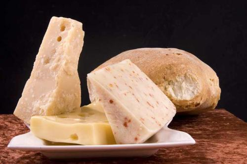
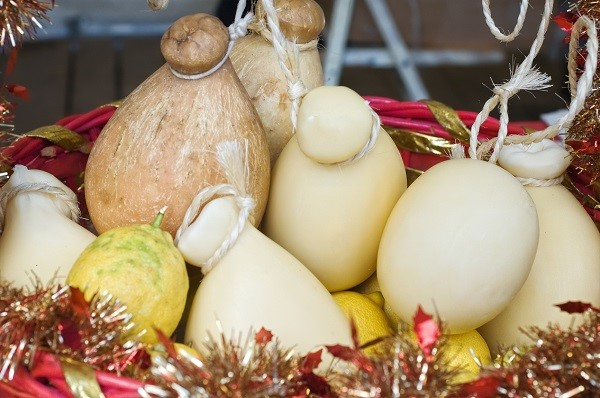

Итальянские сыры
Ни одна кухня мира не обходится без роскошных сыров из Италии? Следует признать, что мир, а точнее мировая кухня, в значительной мере опирается на использование сыров, произведенных и импортируемых из Италии. Большинство из нас знакомы с некоторыми из повседневных сыров, но есть и много других сортов итальянского сыра, с успехом применяемых в кулинарии.
Моцарелла
Наверно каждый наслышан о сыре Моцарелла, входящий как неотъемлемая часть в состав настоящей итальянской пиццы. Производится из коровьего молока (хотя в оригинале - из молока буйволиц), это один из немногих сыров, который имеют две формы: свежий и мягкий, с большей эластичностью, чем свежий. Свежий Моцарелла производится из цельного коровьего молока, формируется в шарики и обычно хранится в воде, рассоле или сыворотке для поддержания его белого цвета и свежести. Вторая форма - для массового производства, как правило, поставляется в блочном или предварительно измельченном виде.
Фонтина
Полу-мягкий, почти телесного цвета сыр с добовлением орехов. Этот маслянистый камень вызывает неизменный восторг. Родиной его является Валле-д'Аоста, что в самом верху северо-западной Италии. Фонтина производится из молока высокогорных коров, которые пасутся на альпийских травах. Он входит в состав рецептов многих известных и изысканных блюд. Фонтина отлично подходит как часть фондю, как простая закуска и часто используется как густой сливочный соус к ризотто.
Маскарпоне
Вероятно, наиболее известный как гладкий и сочный слой, изюминка тирамису (итальянский многослойный десерт). Маскарпоне - это тройная нежность сливок, коровьего молока, сыра, по текстуре напоминает американский сливочный сыр. Маскарпоне - очень нежный и мягкий, но жирный сыр, легко намазывается. Разнообразно применение, традиционный тирамису из бисквитных печений, ликера и маскарпоне - одно из самых популярных. Этот насыщенный, бархатистый сыр является также отличным кремом (если его слегка подсластить и немного взбить) для украшения свежих летних фруктов и ягод.
Горгонзола
Назван по имени города Горгонзола, что неподалеку от Милана, где он впервые был сделан. Горгонзола - итальянская версия голубого сыра. Как правило, Горгонзола в Италии намного нежнее, чем тот, который производят в США, где более сухой вариант является предпочтительным. Горгонзола хорошо сочетается с грушами и виноградом; он идеально подходит для вина, а также, как и все сорта голубого сыра, используется в салатах.

Пармиджано Реджано
Наряду с Моцарелла, Пармиджано Реджано - один из самых известных сыров Италии. Производится из коровьего молока во многих итальянских провинциях. Как правило, в возрасте от 6 до 36 месяцев, Пармиджано Реджано является превосходным по своей свежести продуктом. Аутентичные Пармиджано Реджано будет содержать штамп с наименованием на наружной кожуре сыра. Лучше всего приобрести сыр целый, не тертый, для поддержания максимальной свежести и вкуса. Большинство людей отбросят кожуру в сторону, но с куском кожуры от сыра вкуснее становятся супы и тушеные блюда.
Проволоне
Этот слегка копченный сыр изготавливается из коровьего молока. С возростом усиливается цвет и вкус сыра. Употребляют сыр в возросте от одного месяца до года. Чем желтее цвет сыра, тем более спелым и ароматным он становится. Имеет твердую и слегка упругую консистенцию, проволоне это отличный сыр для плавления, или на бутерброды.
Азиаго
Азиаго относится к вареным, прессованным, мягким сортам сыра в возрасте до двух лет. Изготавливается из коровьего молока. Имеет светлый оттенок и резкий запах. Этот деликатес многие сыровары производят в долине Доломитовых гор (самой восточной части итальянских Альп), особенно в зоне Кортина. Азиаго идеально подходит для измельчения, используется как столовый сыр для дополнения таких традиционных блюд, как ризотто, а также к различным супам, или нарезают тонкими ломтиками и подают с теплым, хрустящим багетом и фруктами.
Пекорино
Сыр, изготовленный из овечьего молока, называется Pecorino (Пекора - овца по итальянски). Если сыр в возрасте, может использоваться вместо пармезана в пасту, что иногда предпочтительнее. По экономичной цене предлагаются некоторые хорошие сорта тертого Пекорино. Наиболее известна Пекорино Романо, другие популярные Pecorinos родом из Тосканы, Сардинии и Сицилии.
Рикотта
Используется исключительно в классических итальянских блюдах, таких как лазанья и маникотти. Рикотта - это на самом деле не сыр, скорее побочный продукт других итальянских сыров. Сыворотки других сыров объединяют и заново готовят для создания сыра Рикотта. Он имеет зернистую текстуру, но надо быть очень осторожным при использовании в соленых или сладких блюдах. Рикотта также используется в классической итальянской ватрушке.
Источник: "Italian Cheeses"
 Итальянская пицца: происхождение
Итальянская пицца: происхождение Пицца Маргарита: история рецепта
Пицца Маргарита: история рецепта Штаб Квартира Караганда Город
Штаб Квартира Караганда Город Штаб КвАРТира Караганда Юго-Восток
Штаб КвАРТира Караганда Юго-Восток myPlaces
myPlaces АВТО ЭГОИСТ
АВТО ЭГОИСТ САРЫ-АРКА
САРЫ-АРКА